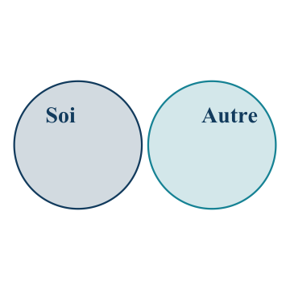
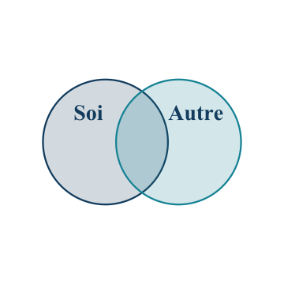
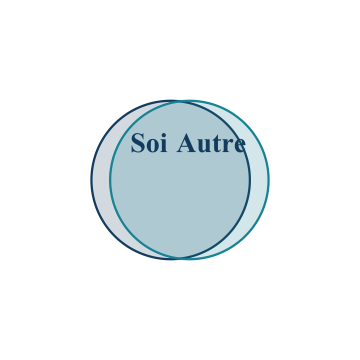

Matière évaluée : cours 7 et chapitre 8 — Les relations interpersonnelles.
8 questions · 10 minutes. Les 8 meilleurs quiz sur 10 comptent pour 10 %.
Examen 2 · 10 novembre · 30 %
Cours 5 à 8 et chapitres 5, 6, 8 et 9. Répartition annoncée : 50 % cours / 50 % manuel.
Note : Puisque la plupart des concepts vus dans le cours sont aussi dans le manuel, cela implique que les 50 % des questions associées aux cours seront fort probablement aussi dans le manuel. Ainsi, il est conseillé de donner un peu plus de poids à l’étude des cours plutôt qu’au manuel.
Pour commencer : comment comprend-on ce que l’autre personne veut dire?
La communication non verbale
Sans son, notez : 1. les émotions; 2. le sujet.
Ramdam, saison 3, épisode 14 · Extrait de 0:30 à 1:03 · Ouvrir la vidéo.
Comparons nos prédictions
Reprenez les deux prédictions écrites dans vos notes pendant le visionnement.
1. Quelles émotions vivent-ils?
2. De quoi parlent-ils?
Qu’avez-vous perçu chez chaque personne?
Quel sujet précis avez-vous imaginé?
Rejouons avec le son. Quelles prédictions sont confirmées, à préciser ou à revoir dans chaque colonne?
Qu’avez-vous le mieux anticipé : les émotions ou le sujet? Quels indices vous ont aidés?
La communication verbale et non verbale
La communication est un échange dans lequel les personnes transmettent des informations et construisent du sens ensemble.
Système
Exemples
Verbal : les mots, à l’oral ou à l’écrit
Une question, une invitation, un message texte
Non verbal : les autres indices de l’échange
Le ton de la voix, le regard, les expressions du visage, les gestes, la distance
Ces indices se combinent pour interpréter un message.
Un message transmet aussi une relation
L’aspect informationnel concerne le contenu du message.
L’aspect relationnel concerne la façon dont les personnes se situent l’une par rapport à l’autre : proximité, distance, autorité, soutien…
« Tu peux fermer la porte? »
Selon le ton et la situation, la même phrase peut être une demande calme, un reproche ou une manière de préserver une conversation privée.
Les relations interpersonnelles
Manolo et Constance : quels signes d’attirance réciproque?
Ramdam · Manolo et Constance · Extrait de 14:38 à 16:26 · Ouvrir la vidéo.
Qu’est-ce qu’une relation interpersonnelle?
Une relation interpersonnelle est un lien continu entre des personnes qui s’influencent mutuellement dans un contexte social et au fil du temps.
Une amitié a une histoire, des attentes et une tonalité émotionnelle.
Le besoin d’appartenance est le besoin de créer et de maintenir des relations importantes, durables et positives.
L’interdépendance sociale
L’interdépendance sociale désigne la dépendance mutuelle entre les personnes dans leurs échanges.
Pour décrire l’influence réciproque, regardons :
la fréquence des interactions;
les domaines de vie concernés;
la force de l’influence sur les comportements.
Choisir un jeu une fois ou organiser ensemble logement, finances et loisirs ne mobilise pas les mêmes domaines.
L’attraction interpersonnelle
L’attraction interpersonnelle désigne une évaluation positive d’une autre personne et le désir de s’en rapprocher.
Elle peut concerner une amitié ou une relation amoureuse.
Aimer passer du temps avec Manolo ne signifie pas nécessairement souhaiter une relation amoureuse.
Quels facteurs peuvent faciliter cette attirance? Nous examinerons la proximité, la familiarité, la similitude, l’attirance réciproque et l’apparence physique.
Proximité et familiarité
Imaginons d’autres situations avec Manolo et Constance pour explorer les concepts.
L’effet de proximité : les personnes proches géographiquement ont davantage d’occasions de nouer une relation.
L’effet de simple exposition : les expositions répétées peuvent augmenter l’appréciation d’une personne, devenue plus familière.
Proximité géographique → occasions de se rencontrer et de se revoir → familiarité accrue → attraction favorisée.
La familiarité contribue ainsi à expliquer l’effet de proximité, dans la formation d’amitiés comme de relations amoureuses.
Manolo et Constance suivent le même cours de mathématiques et se retrouvent en classe chaque semaine. Quel indice montre la proximité? Que faudrait-il observer pour parler d’un effet de simple exposition?
La simple exposition en classe
Dans un cours universitaire en présentiel, quatre femmes participent à l’étude avec l’équipe de recherche : elles se font passer pour des étudiantes du cours.
Chacune vient à un nombre différent de cours pendant le trimestre : 0, 5, 10 ou 15. La classe ne voit donc jamais l’une d’elles.
Lorsqu’elles sont présentes, elles ne discutent pas avec les personnes étudiantes : celles-ci peuvent les voir, sans apprendre à les connaitre par une conversation.
À la fin du trimestre, 130 personnes étudiantes du cours voient leurs photographies et évaluent notamment la possibilité de devenir leur amie ou ami.
Votre prédiction : une personne vue plus souvent semblera-t-elle plus attirante comme amie, même sans lui avoir parlé?
La similitude correspond à des ressemblances entre les personnes, notamment dans leurs attitudes, leurs valeurs et leurs intérêts. Ces ressemblances peuvent favoriser l’attirance.
Imaginons que Manolo découvre que Constance aime les mêmes groupes de musique que lui.
Pourquoi cette découverte pourrait-elle lui donner davantage envie de passer du temps avec elle?
Un gout commun leur donne un sujet de conversation et une activité à partager. Manolo peut aussi avoir le sentiment que Constance le comprend.
L’attirance réciproque
L’attirance réciproque : apprendre qu’une personne nous apprécie peut favoriser notre attirance envers elle.
« Constance m’a dit avoir aimé notre conversation. »
Ce nouvel indice porte sur ce que Constance ressent; il ne prouve pas que Manolo et Constance se ressemblent.
Deux envies à concilier
Me rapprocher de cette personne
Ne pas trop m’exposer
« J’ai envie de lui parler. »
« Je ne veux pas risquer un refus. »
Quelle information rendrait le rapprochement moins incertain?
Un signe que l’autre personne apprécie aussi la rencontre peut favoriser l’attirance réciproque.
Jake Clark, Daily Struggle / Two Buttons · source du modèle · légendes françaises originales.
L’apparence physique
L’apparence peut influencer les premières impressions et l’attraction.
Une impression favorable peut aussi déborder vers des qualités qui n’ont pas été observées directement.
Exemple fictif : « Cette personne est attirante, donc elle doit être attentionnée. »
Quel élément de cette conclusion demanderait une information supplémentaire?
Ronde 1 — Qu’est-ce qui favorise le rapprochement?
Gardez l’onglet ouvert pour les rondes et les propositions de pause.
Atelier : imaginons la suite de leur rencontre
10:00
Équipes de 3 ou 4 · 10 minutes de discussion
Manolo et Constance suivent le même cours de maths. Au lieu d’écouter le prof, ils discutent et découvrent des gouts musicaux communs. Constance lui dit : « J’aime vraiment parler avec toi! » Manolo souhaite la revoir.
Repérez deux facteurs qui facilitent l’attirance et leurs indices dans cette scène.
Manolo change de groupe de maths : ils ne partagent plus ce cours. Inventez une suite avec deux actions ou échanges concrets qui pourraient favoriser leur rapprochement, en utilisant deux facteurs étudiés.
Préparez une minute pour raconter votre scène, donner une réplique de Constance et expliquer à quels facteurs vos deux actions correspondent.
Tour des équipes
Une minute par équipe : racontez votre scène ou faites entendre ses répliques.
Comment Manolo et Constance se retrouvent-ils après le changement de groupe?
Que fait ou dit chaque personne?
Quels sont les deux facteurs mobilisés, et quels détails de votre scène les illustrent?
Révélation de soi et intimité
La révélation de soi consiste à communiquer des informations personnelles à son sujet.
L’intimité renvoie au sentiment de proximité et de lien dans une relation.
Constance raconte une déception. Comparez les deux réponses de Manolo :
« Tu exagères. »
« Qu’est-ce qui t’a le plus affectée? »
Quel indice montre la révélation de soi? Quelle information manque pour savoir si Constance ressent davantage d’intimité?
L’inclusion de l’autre en soi
L’inclusion de l’autre en soi est l’intégration de ressources et d’aspects de l’autre personne dans sa représentation de soi.



Davantage de chevauchement représente une plus grande inclusion perçue de l’autre en soi.
Gardez l’onglet ouvert pour les rondes et les propositions de pause.
L’attachement : deux dimensions
L’attachement est un lien affectif qui pousse à chercher la proximité d’une personne pouvant apporter attention et réconfort.
Anxiété d’abandon : crainte de perdre l’affection de l’autre ou de voir la relation se terminer.
Évitement de l’intimité : inconfort devant la proximité et la dépendance affective.
Anxiété faible
Anxiété élevée
Évitement faible
Sécurisant
Préoccupé
Évitement élevé
Détaché
Craintif
Manolo attend une réponse de Constance
Constance ne répond pas depuis quelques heures. Voici trois réactions fictives de Manolo :
« Constance n’est sans doute pas disponible. Je lui raconterai ma journée plus tard. »
« Et si Constance ne voulait plus me voir? Je vais envoyer plusieurs messages. »
« J’aimerais avoir une réponse, mais parler de ce que je ressens me met mal à l’aise. »
Pour chaque réaction : quel indice concerne la peur de perdre le lien? Lequel concerne l’inconfort devant la proximité?
Les échanges et l’équité
L’échange social examine les avantages et les couts perçus d’une relation.
L’équité est la perception d’un rapport juste entre les contributions et les bénéfices de chaque personne.
Manolo prépare les repas; Constance fait les courses et la vaisselle.
Manolo apprécie cuisiner, mais trouve fatigant de devoir aussi prendre en charge tous les menus.
Quelles informations faudrait-il connaitre pour comprendre si le partage leur semble équitable?
Satisfaction et engagement : deux questions
Notion
Question à distinguer
Satisfaction : évaluation de la relation selon les attentes et les échanges vécus
« Cette relation me convient-elle? »
Engagement : lien qui influence l’intention de poursuivre la relation
« Est-ce que je compte poursuivre cette relation? »
Le niveau de comparaison correspond au standard utilisé pour évaluer ce que l’on reçoit.
Une réponse moins favorable à la première question n’impose pas automatiquement la même réponse à la seconde. Quelles autres informations aideraient à comprendre?
Le modèle de l’investissement
Les investissements sont les ressources consacrées à la relation qui seraient perdues ou diminuées si elle se terminait.
Les autres possibilités comprennent une autre relation ou la vie sans cette relation. Leur évaluation correspond au niveau de comparaison des options possibles.
Dans le modèle…
Engagement généralement attendu
Plus de satisfaction
Plus fort
Plus d’investissements
Plus fort
De meilleures autres possibilités
Plus faible
Pourquoi Manolo poursuit cette relation?
Manolo dit : « Les disputes me pèsent, mais je compte poursuivre notre relation. »
Manolo et Constance ont consacré beaucoup de temps à un projet commun et partagent un cercle d’amitié.
Manolo imagine difficilement une vie satisfaisante sans cette relation.
Quels éléments éclairent la satisfaction? Lesquels éclairent l’engagement?
Si Manolo découvrait des possibilités satisfaisantes en dehors de cette relation, que prédit le modèle pour son engagement?
Le soutien social
Le soutien social comprend l’aide disponible pour répondre à des besoins et la perception de pouvoir compter sur d’autres personnes.
Émotionnel : écouter, exprimer de l’affection.
Informatif ou évaluatif : fournir des informations ou des conseils.
Matériel : offrir du temps, un service ou une ressource.
Manolo déménage : quelle aide est utile maintenant? Comment le savoir?
Quand une relation devient difficile
La qualité du lien compte : les relations peuvent aussi apporter conflits, rupture et blessures.
Dans la violence conjugale, des actes de domination visent à exercer du pouvoir sur l’autre personne. Ils peuvent être psychologiques, verbaux, physiques, sexuels ou économiques.
Un désaccord et un acte de domination ne décrivent pas la même situation.
Les conseils relationnels de xkcd
Résumé français : « Les relations demandent des efforts… c’est un travail… un fardeau écrasant! » — « Est-ce que ça va? »
Question : quels éléments renseigneraient vraiment sur la qualité de cette relation?
La solitude interpersonnelle est une expérience désagréable liée à l’écart entre les relations vécues et souhaitées, dans leur quantité ou leur qualité.
Solitude sociale : manque d’un réseau satisfaisant et d’un sentiment d’appartenance.
Solitude émotionnelle : manque d’une relation intime satisfaisante.
Manolo connait beaucoup de monde, mais n’a personne à qui parler d’une difficulté. Quelle dimension est surtout décrite?
Constance raconte une difficulté personnelle à Manolo, qui écoute et montre de la compréhension.
Quel processus Constance illustre-t-elle en racontant cette difficulté?
A. La simple exposition
B. La révélation de soi
C. L’inclusion de l’autre en soi
5. Un partage jugé juste
Manolo et Constance font des tâches différentes et jugent le partage juste.
Quel concept décrit ce jugement?
A. L’équité
B. La similitude
C. L’engagement
6. Rester dans une relation peu satisfaisante
Manolo trouve sa relation peu satisfaisante, mais compte la poursuivre.
Quelles autres informations le modèle de l’investissement invite-t-il à chercher pour comprendre son engagement?
A. La fréquence des rencontres et la proximité géographique
B. La similitude des intérêts et l’apparence physique
C. Les investissements et la qualité des autres possibilités
Les prochaines évaluations
Quiz 6 · 3 novembre · 1,25 %
Matière évaluée : cours 7 et chapitre 8 — Les relations interpersonnelles.
8 questions · 10 minutes. Les 8 meilleurs quiz sur 10 comptent pour 10 %.
Examen 2 · 10 novembre · 30 %
Cours 5 à 8 et chapitres 5, 6, 8 et 9. Répartition annoncée : 50 % cours / 50 % manuel.
Note : Puisque la plupart des concepts vus dans le cours sont aussi dans le manuel, cela implique que les 50 % des questions associées aux cours seront fort probablement aussi dans le manuel. Ainsi, il est conseillé de donner un peu plus de poids à l’étude des cours plutôt qu’au manuel.